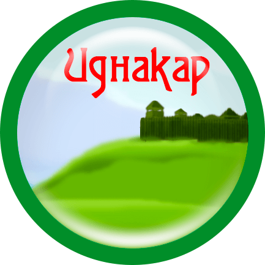
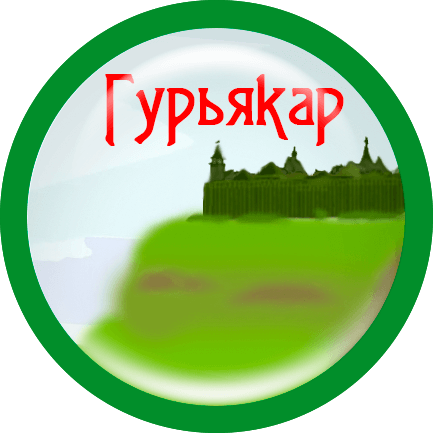

Идна остался на отцовом угодье - Иднакар. Сам отец, Донды, с младшими сыновьями отправился вверх по реке Пызеп, в верстах пятнадцати к северо-западу основал себе новое городище - Дондыкар. Гурья выбрал для себя крутую гору выше по течению реки Чепцы, городище - Гурьякар.
В краю Донды батыра Давным-давно на гору Солдырь откуда-то пришел удмуртский батыр Донды, и остался тут жить. И было у него два сына - Идна и Гурья. На Солдыре у него родились еще несколько сыновей, среди них Весья и Зуй. Время шло, сыновья подрастали, и стало им тесно на одном месте.


Городища Донды батыра и его сыновей